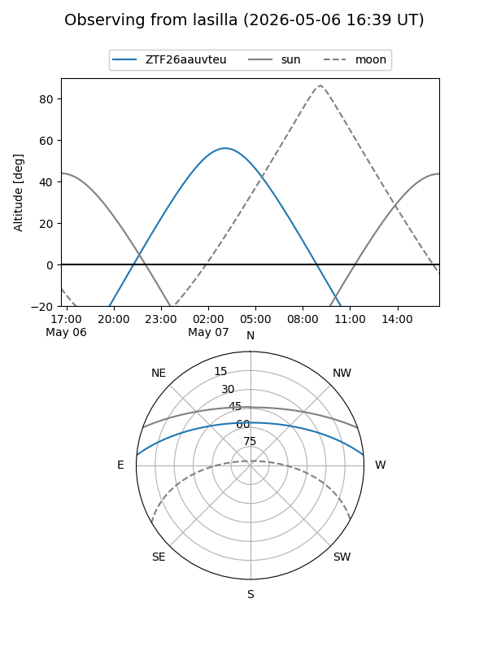
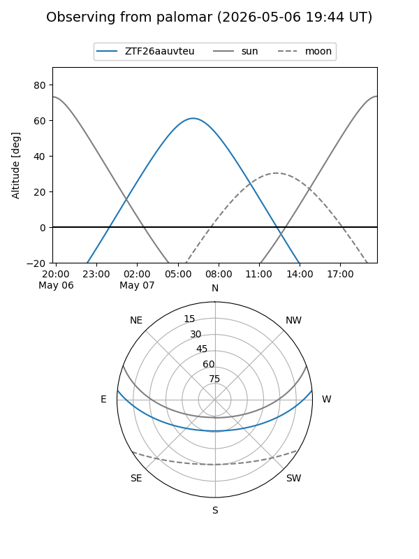

ZTF26aauvteu
Target ZTF26aauvteu at 2026-05-07 07:26
Aliases and brokers:
FINK: link
Lasair: link
ALeRCE: link
alt names
ZTF26aauvteu (ztf,fink_ztf)
Coordinates:
equatorial (ra, dec) = 199.9842,+4.71305
equatorial (HMS+DMS) = 13:19:56.20,+04:42:46.98
galactic (l, b) = (321.0488,+66.57715)
Flags:
Photometry:
last ztfg=19.51
1 ztfg detections
Lightcurve
Visibility


Additional plots